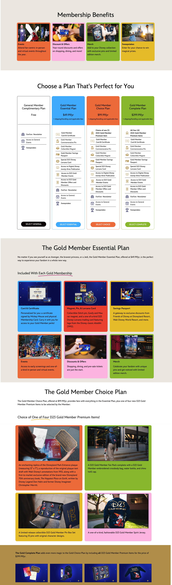
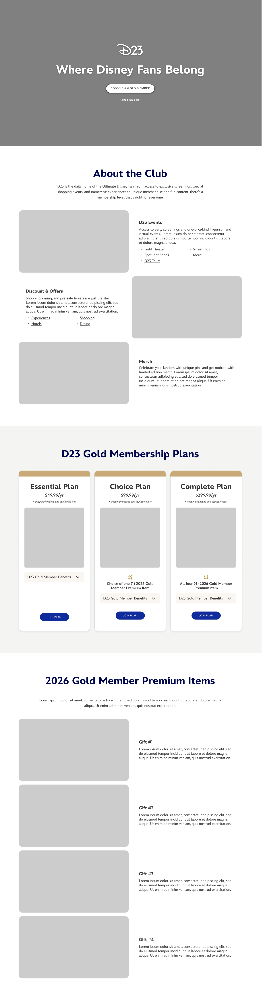
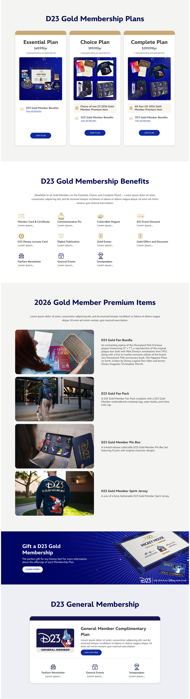
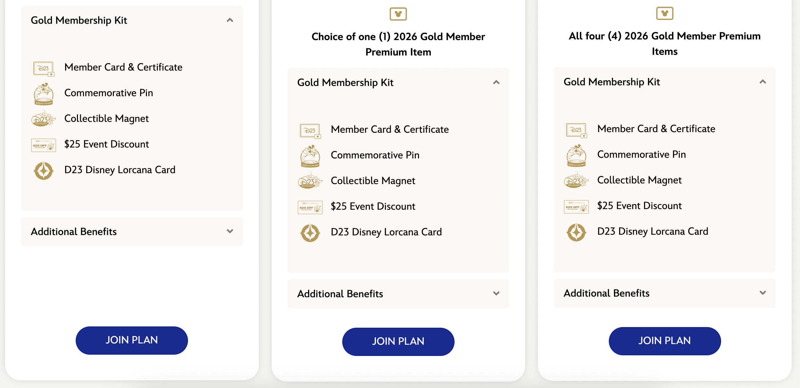
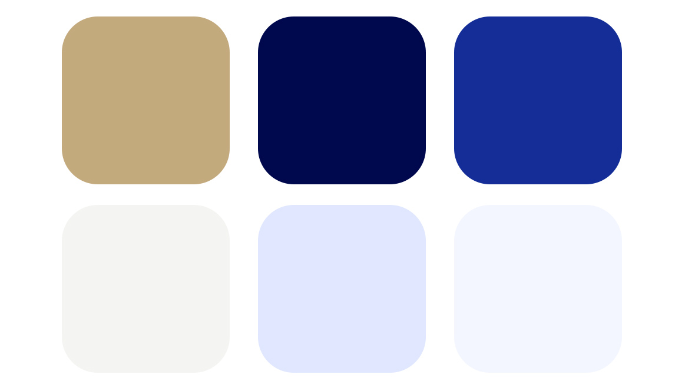
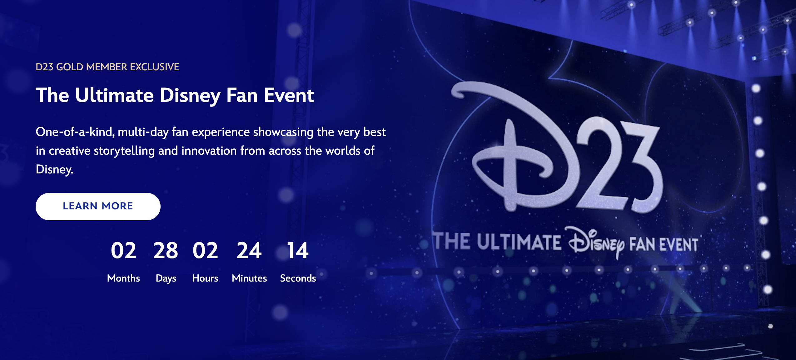
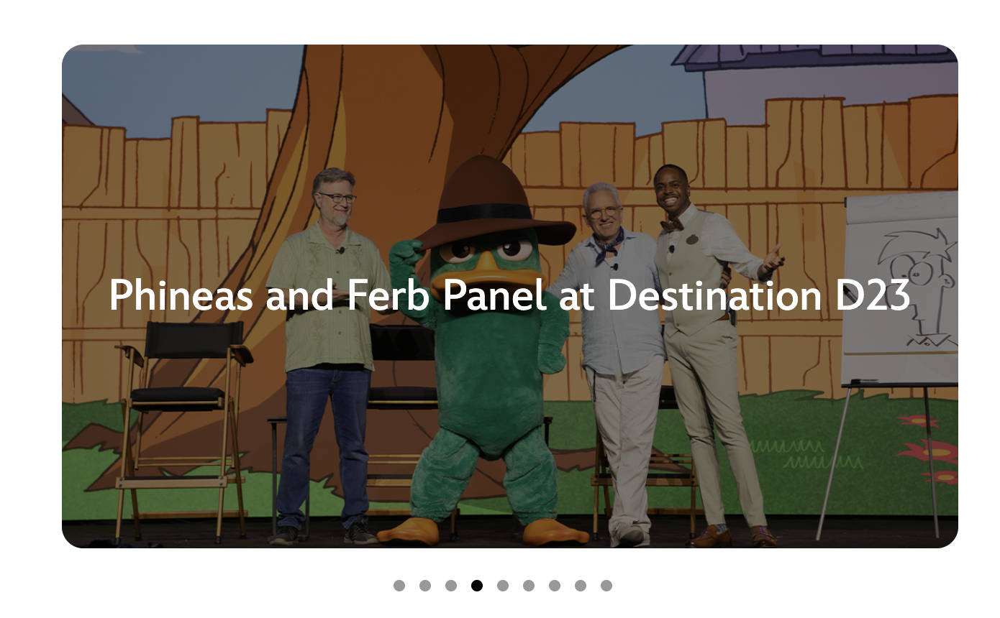
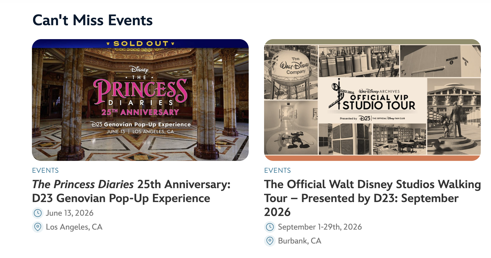

D23 Membership Join Page
A Case Study and Redesign
PROJECT OVERVIEW
SUMMARY
The D23 Join Page required a redesign for 2026 to include updated membership offerings and branding elements. The 2025 design also contained several major usability and design issues that needed to be addressed.
BACKGROUND
What is D23? D23 is “The Official Disney Fan Club,” where Disney fans can join a membership to gain access to exclusive events, discounts, merch, and more. D23.com also serves as an editorial platform featuring articles and quizzes.
What is the D23 Join Page? The D23 Join Page is where users can see the benefits and offerings of a D23 membership and choose a plan. Memberships are a major source of revenue for D23, so a clear and compelling message is crucial for this page.
MY ROLE
I was assigned to lead the creation of the 2026 Join Page from ideation through execution, with help from senior leadership and UX designers.
RESEARCH & DISCOVERY
MY FINDINGS
The old 2025 Join Page fell short in accessibility, responsiveness, and overall design.
- Did not meet color constrast standards - dark background colors make the black text hard to read
- Lack of consistency with design:
- Hover effects not consistently applied
- Mix of round/straight corners
- Borders mixed with no borders
- Padding and margin inconsistencies
- Unclear color palette
- Not mobile friendly - the membership plan section featured three long, non-collapsible lists that stacked on top of each other on a mobile device. This required a lot of scrolling to see all of the plans and their offerings.
Both the storytelling and visual design of the page needed improvement to better communicate the value of a membership. In particular, events are a major incentive for users to join, but the page lacked specificity around upcoming event offerings and experiences.
USER DEMOGRAPHICS
The demographic for D23 leans older, with the primary audience being 40-70 years old. A fresh, dynamic redesign was important to draw in more younger audiences.
Around 70% of users view the website on a mobile device, making a mobile-first design essential.
MAIN GOALS FOR REDESIGN
After speaking with team leaders and getting a sense of what the main priorities for the page were, I came up with 6 main goals for the new design.
- Responsiveness
- Accessibility
- Visual-First
- Motion & Interactivity
- Showcase Membership Benefits
- FOMO (Fear of Missing Out)
OLD 2025 JOIN PAGE

DESIGN PROCESS
Figma First Iterations


Over many meetings with leaders and senior designers, I was able to improve these prototypes by adding more dynamic visual sections as seen in the final design below.
FINAL DESIGN & ANALYSIS


How does the new design meet each main goal?
Responsiveness: The membership plan section uses accordions to organize benefits in a more mobile-friendly format, reducing excessive scrolling for users. It also incorporates imagery to clearly showcase the items included in each plan, minimizing the need for large blocks of text.


Accessibility: The new design uses a reduced blue and gold color palette, with light and dark tones to meet accessibility contrast standards.
Visual-First: The page truncates copy and relies more heavily on images and videos to tell the story.


Motion & Interactivity: Suble motion and interactive elements are used to create a more engaging experience. These include:
- Hero video
- Countdown timer for The Ultimate Disney Fan Event
- Automatic image carousels with hover effects
- Accordions that reveal more content with interaction
FOMO: By showcasing previous and upcoming events, users are more likely to feel "FOMO" and have a desire to become a member to not miss out on future experiences.

IMPACT & LEARNINGS
This project gave me hands-on experience with the end-to-end design process on a high-traffic webpage, where I learned how to iterate and incorporate feedback from senior leaders. Early concepts were refined through team insights and critiques, which pushed me to create a more engaging experience for users while maintaining a strong focus on usability. I collaborated cross-functionally with marketing, editorial, and legal teams to gather assets and successfully meet a hard launch deadline of January 1, 2026.
Following the redesign, the Join Page experienced a noticeable increase in engagement at the beginning of 2026, and D23 saw its strongest member growth to date. I was able to see firsthand how much improvements in clarity and design can impact conversion and engagement.